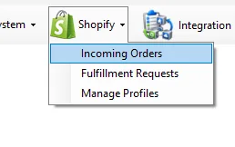

Shopify
The Shopify module connects online commerce with IMS sales, inventory, fulfillment and financial processing. It gives authorized users one operational workflow for incoming orders, Store fulfillment requests and the profiles that define each online channel.

Module | Scope
| Module | Scope |
|---|---|
| Incoming Orders | Review online orders, customer/address data and item lines; control order state; create IMS invoices/refunds/exchanges; inspect linked IMS receipts; and manage fulfillment-sensitive corrections. |
| Fulfillment Requests | Review Stock Transfer vouchers created for online fulfillment, verify the packed merchandise and mark outstanding transfers as confirmed/ready. |
| Manage Profiles | Define each online profile, suppliers that may be sold online, prioritized fulfillment Stores, excluded Stores and the Shopify/market access records mapped to IMS online Stores. |
Background Integration Server
The three IMS menu screens are supported by a separate background application running on the integration server. It imports unfulfilled Shopify orders, creates IMS fulfillment transfers for normal stock, and pushes changed IMS inventory quantities back to the configured Shopify locations.
Each running server instance handles one active Shopify Profile ID and all active Shopify Access Stores beneath that profile. See Shopify Integration Server for the complete order-import and inventory-synchronization workflow.
How the pieces work together
- Manage Profiles defines the online channel, its eligible suppliers, fulfillment priority and Store/API mappings.
- An online order is received into Incoming Orders, where IMS keeps the order, customer, merchandise and status together.
- For IMS-stock items, fulfillment selects inventory according to the profile's Store rules and creates Stock Transfer vouchers from the supplying Store(s) toward the mapped online Store.
- Store staff use Fulfillment Requests to review the transfer contents and confirm the packed request.
- When the order reaches invoicing, IMS can create the corresponding Sales/Credit receipt, update inventory, create the financial journal and link that receipt back to the online order.
- Refunds and exchanges continue to use the same order history so fulfillment, inventory and financial effects stay connected.